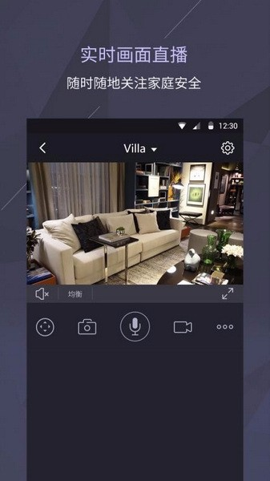
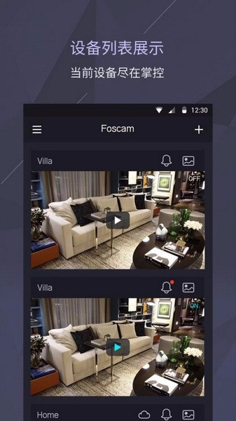

家用摄像头我前后换了五个牌子，Foscam 有两点至今没被追上
装过小米、360、萤石、Arlo 之后回头看，Foscam 这款在电池省电和夜视灵活性上的硬实力，为什么一直没人抄明白
家装有娃之后，装几台摄像头基本是绕不开的事。从最早跟风买的小米云台，到后来嫌画质差换 360，再到搬家后为了户外场景选过 Arlo Pro 2，前后折腾下来，手上攒过的摄像头少说有十来台，牌子跨了五个。
Foscam 是当初北美一个做智能家居的朋友推的——那牌子在国内几乎没什么声量，深圳出生但主要卖欧美市场，官网做了快二十年，硬件迭代稳，软件也在持续调优，价格比小米贵一点，比 Arlo 便宜一截。抱着试试的心态入了两台，一台装院子、一台装门口，用了快三年。中间也不是没动过换掉它的念头，小米出新电池款、Arlo 出了 4K，但每次拆下来对比完又装回去了。
不是 Foscam 有多完美，而是它有两个点，市面上同价位的竞品至今没跟上。

电池款的省电逻辑，它是真的没想当然
大部分电池款摄像头的省电方案，思路非黑即白：要么纯 PIR 红外感应，检测到温度变化才唤醒；要么全天候低功耗在线，用 AI 视觉做运动识别。前者的问题是误触发——冬天室外温差大，猫过马路、甚至一阵热空气飘过来，都会把摄像头叫醒，一晚上推送七八条没意义的告警，电池倒能撑，但用得闹心。后者的问题是耗电——看起来识别准了，但摄像头芯片一直在线，哪怕低功耗模式，电量也就两三周见底，冬天冷的时候衰减更快。
Foscam 的做法是把两个方案叠在一起用，用 PIR 当第一道岗哨，AI 视觉当第二道确认。摄像头平时真的在休眠，功耗几乎为零；PIR 感应到有人接近，八米范围、105 度角度之内有温度变化，才触发唤醒；摄像头启动后 AI 视觉会在半秒内完成一次人形判断——不是人就立刻回到休眠。两层筛下来，误触发的告警推送我这边三天都不会超过一条，而电池在东北零下二十度的冬天，一台院子里的 B4 撑了整整三个月才充一次。
这种双重方案的硬件成本其实没比别家高多少，但软件调优的工作量差了好几个数量级。PIR 灵敏度要和 AI 识别阈值做联动校准，温度接近人体的夏天要自动降低 PIR 灵敏度、多依赖 AI，低温冬天要反过来调整，这些细节大部分竞品不会花精力做。你去翻它的foscam文档，关于 PIR 参数调优的段落就有好几页，这不是为了显得专业，是真的有人在维护这块逻辑。想自己调 PIR 灵敏度，先从下载装个 App 进到摄像头设置面板就行。
三种夜视模式不是营销话术
我之前一直以为，所谓的"多种夜视模式"都是厂商写在包装上的营销词——开关一开，无非就是黑白红外和彩色白光二选一，再给个 Auto 自动切换应付事。Foscam 是第一个让我觉得三种模式真的不一样的。
红外夜视就是纯黑白，隐蔽性好，门口装一台不会被路过的人注意到，夜里访客按门铃也不会被突然的白光吓到。白光夜视用白色 LED 补光，彩色画面，院子里停车的时候能看清车身颜色，真出了什么事录像能用。最特别的是全彩夜视——不用补光，靠 HDR 低照度传感器，楼道有个声控灯、或者邻居家窗户漏点光，画面就是彩色的，而且噪点控制得比我试过的任何同价位摄像头都干净。SD4 那台装在地下室楼梯口，全年没开过补光，夜里声控灯亮起那两秒能看清来人穿的衣服颜色。
Auto 模式也不是简单的光线阈值切换。它会记每个摄像头安装位置的光线波动规律——我家院门口每天傍晚五点多有夕阳直射，Auto 会提前两分钟从红外切白光，等夕阳没了再切回去，不会等画面已经糊了才反应过来。
它也没那么完美
说两个我纠结过的点。第一个是云存储计费。Foscam Cloud 是按摄像头数量算钱的，不是家庭共享。Basic 档历史保留 3 天、年付三十多美元，Standard 档七天、多了 AI 人形和车辆检测、还有每日视频摘要——AI 自动从一天的录像里剪关键片段，不用自己拉进度条，这个功能确实好用。但如果你家有三台摄像头全开 Standard，年费就是二十美元出头一台，三台加起来六十多。我是只给大门口和院子开了 Standard，婴儿房那台只插 SD 卡，省一半预算。
第二个是生态。Alexa 和 Google Assistant 的支持是真的丝滑，家里 Echo Show 说一句 "show me the front door camera" 就能直接跳画面，延迟控制得比很多国行摄像头还好。但 HomeKit 支持仅限高端型号，米家生态也别想。国内用户如果已经在米家或者苹果全家桶里搭好了智能家居，Foscam 大概率融不进去，单装几台还好，整套换会很别扭。
还有国内售后，毕竟主战场不在这，维修和退换远不如小米方便。我上次换电池排线，还是自己拆的——说明书里的中文是机翻的，官方文档里的英文反而更清楚。这方面想省心的还是得选国产大牌。

买不买，看你在哪、需要什么
说了这么多，其实选购逻辑很简单。如果你人在北美或者欧洲，家里有 Alexa 或 Google 音箱，需要一两台室外电池无线摄像头，又在意夜视的灵活性——Foscam 值得考虑。
但如果你在国内，已经搭了米家或者苹果 HomeKit 生态，或者家里摄像头比较多、云存储预算紧张，Foscam 大概率不是最优解。小米新出的电池款虽然省电逻辑不如 Foscam 精细，但生态好、价格便宜、售后方便，对多数人来说够用了。
我自己的结论是：一台都没出，三台都还在用。不是因为 Foscam 是神，而是它解决的那两个痛点——电池款的精准省电和夜视的灵活切换——我至今没在同价位的其他牌子上看到一个能同时处理好的。如果你刚好卡在这两个需求上，去它的官网看看具体型号的参数，下载官方 App 体验一下实时画面，比听我瞎扯靠谱。